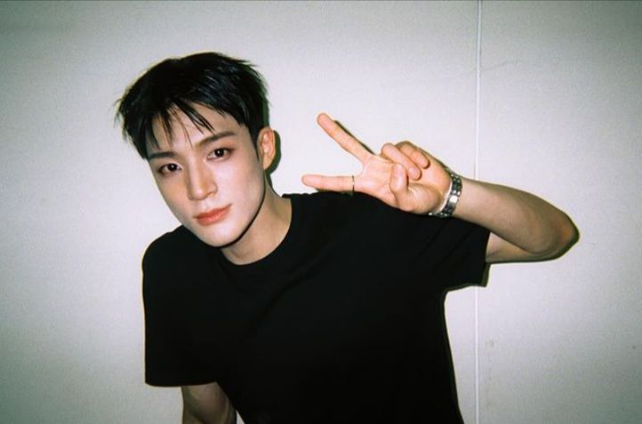

Profil Lee Jeno

Nama Lengkap: Lee Jeno (이제노)
Tanggal Lahir: 23 April 2000
Tempat Lahir: Incheon, Korea Selatan
Posisi dalam Grup: Lead Dancer, Rapper, Vocalist
Debut: Debut dengan NCT Dream pada Agustus 2016
Karier
- Masa Kecil sebagai Model: Sebelum bergabung dengan SM Entertainment, Jeno pernah menjadi model cilik untuk beberapa iklan di Korea Selatan. Pengalaman ini membantunya menjadi lebih percaya diri di depan kamera.
- Masuk SM Entertainment: Pada tahun 2013, Jeno bergabung dengan SM Entertainment melalui audisi SM Global. Setelah bergabung, ia menjalani pelatihan intensif selama tiga tahun dalam berbagai disiplin, termasuk menyanyi, menari, dan akting.
- Debut Resmi: Jeno debut pada 25 Agustus 2016 sebagai anggota NCT Dream, sub-unit ketiga dari grup besar NCT yang berada di bawah SM Entertainment. Debutnya dimulai dengan single "Chewing Gum," yang menampilkan konsep ceria dan energik, sesuai dengan tema remaja grup tersebut.
- Posisi dalam Grup: Dalam NCT Dream, Jeno menempati posisi sebagai lead dancer, rapper, dan vocalist. Ia dikenal dengan gerakan tariannya yang kuat dan rapi, serta kemampuan rap yang memikat.
Pencapaian Bersama NCT Dream
- "Hot Sauce" (2021): Album ini menjadi album pertama NCT Dream yang terjual lebih dari satu juta kopi hanya dalam 16 hari sejak dirilis. “Hot Sauce” juga menduduki peringkat pertama di berbagai tangga lagu Korea Selatan, seperti Gaon Album Chart, dan menduduki puncak tangga lagu iTunes di lebih dari 37 negara. Album ini juga memenangkan Daesang (Grand Prize) Album of the Year di Asia Artist Awards 2021.
- "Hello Future" (2021): Album repackage dari “Hot Sauce” ini juga meraih sukses besar, terjual lebih dari 1,2 juta kopi. "Hello Future" berhasil menduduki puncak tangga lagu di Korea Selatan dan internasional, memperkuat status NCT Dream sebagai salah satu grup K-pop terkemuka.
- "Glitch Mode" (2022): Album studio kedua ini terjual lebih dari 2 juta kopi hanya dalam 3 minggu setelah dirilis, menjadikannya album kedua berturut-turut yang mencapai status "Double Million Seller". Album ini juga menduduki peringkat pertama di berbagai tangga lagu di Korea dan luar negeri.
Hobi
- Menggambar: Jeno memiliki bakat menggambar dan sering berbagi hasil karyanya dengan penggemar. Dia suka menggambar karakter kartun dan desain kreatif lainnya.
- Olahraga: Jeno menikmati bermain bola basket dan skateboard. Aktivitas ini membantunya tetap aktif dan menjaga kebugarannya.
- Musik dan Menari: Selain tampil dengan NCT Dream, Jeno suka mendengarkan musik berbagai genre dan terus mengasah keterampilan menarinya di waktu luang.
- Game: Jeno adalah penggemar game dan sering menghabiskan waktu bermain game daring bersama teman-temannya.
- Fotografi: Dia juga suka mengambil foto dengan kamera digitalnya, terutama foto pemandangan dan momen bersama teman-teman.
Keseharian
Lee Jeno, sebagai anggota NCT Dream, memiliki rutinitas yang padat dan teratur. Keseharian Jeno biasanya mencakup:
- Latihan dan Rehearsal: Jeno sering memulai hari dengan latihan vokal dan tari untuk persiapan penampilan mendatang. Latihan ini dilakukan di studio SM Entertainment dan dapat memakan waktu beberapa jam.
- Jadwal Kegiatan: Setelah latihan, Jeno biasanya menjalani jadwal kegiatan lain seperti pemotretan, syuting untuk acara TV, atau wawancara. Jadwalnya sering kali bervariasi tergantung pada proyek yang sedang dikerjakan.
- Waktu Luang: Di waktu luangnya, Jeno suka menghabiskan waktu bersama teman-temannya, baik dengan bermain game, menggambar, atau hanya bersantai. Dia juga suka berolahraga untuk menjaga kebugaran.
- Interaksi dengan Penggemar: Jeno sering berinteraksi dengan penggemarnya melalui media sosial seperti Instagram dan V Live, di mana dia berbagi aktivitas sehari-harinya dan momen spesial.
- Persiapan Malam: Pada malam hari, Jeno biasanya melakukan persiapan terakhir untuk penampilan esok hari dan menyisihkan waktu untuk istirahat. Dia mungkin juga menonton drama atau film untuk bersantai sebelum tidur.
instagram :leejeno